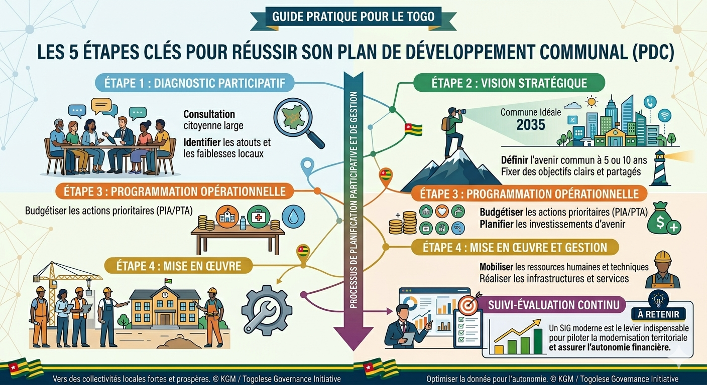

Le PDC est la boussole de la commune. Pour qu'il soit efficace au service des citoyens, il doit suivre une méthodologie rigoureuse conforme aux orientations nationales au Togo.
Les 5 étapes clés :
- Diagnostic participatif : Écouter les besoins des populations à la base.
- Vision stratégique : Définir ce que sera la commune dans 5 ou 10 ans.
- Programmation : Budgétiser les actions prioritaires.
- Mise en œuvre : Aligner les ressources humaines et techniques.
- Suivi-Évaluation : Mesurer l'impact réel sur le terrain.

Un PDC réussi est un PDC où chaque projet est géolocalisé, permettant un suivi visuel de l'avancement des travaux par les élus et les partenaires au développement.